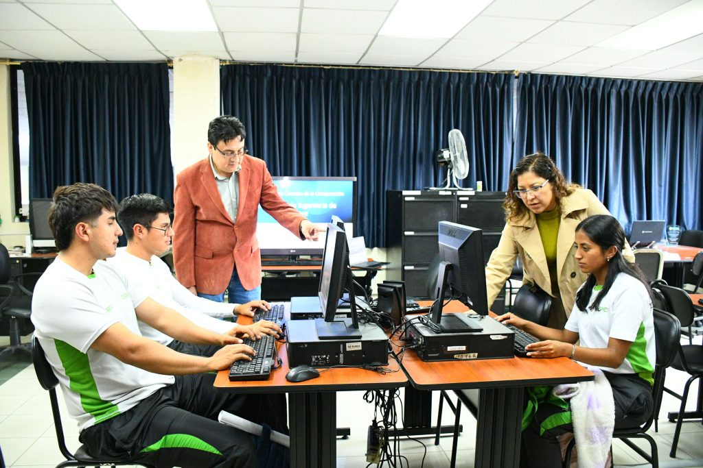
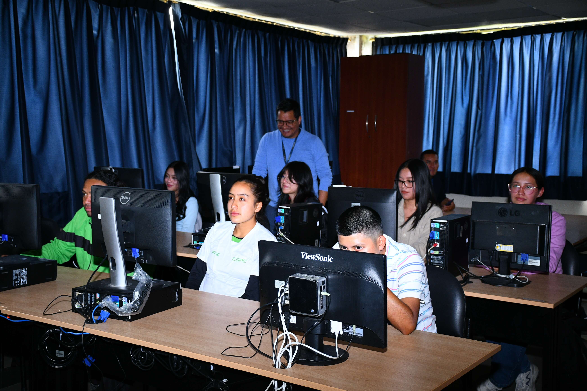

Un club de software (o club de desarrollo de software) es una comunidad o agrupación de personas con intereses comunes en la informática, la programación y las nuevas tecnologías.
Dedicado a programadores y amantes de la tecnología.
Concursos de programnación, concursos de videojuegos, charlas y talleres.
Ser los mejores en el área de programación.
Crear proyectos de alta calidad que cumplan con estándares internacionales.
"La única manera de aprender un lenguaje de programación nuevo es escribiendo programas en él."
— Dennis Ritchie